One paper accepted by SCIS.
One paper accepted by IEEE TIP.
Two papers accepted by CVPR and one paper accepted by Pattern Recognition.
One paper accepted by IEEE TPAMI.
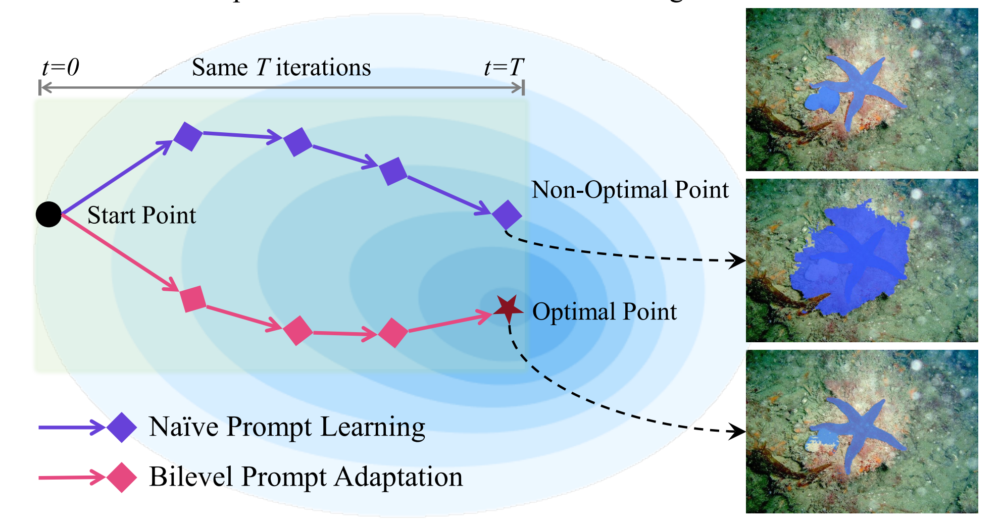
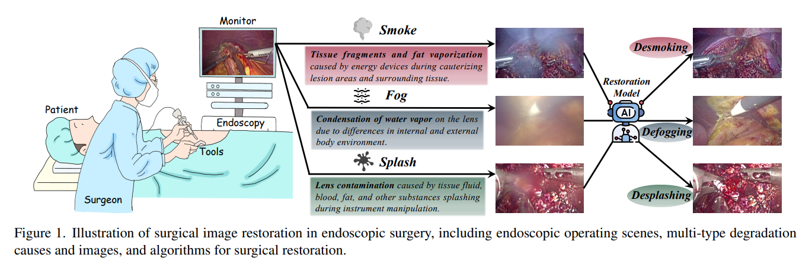
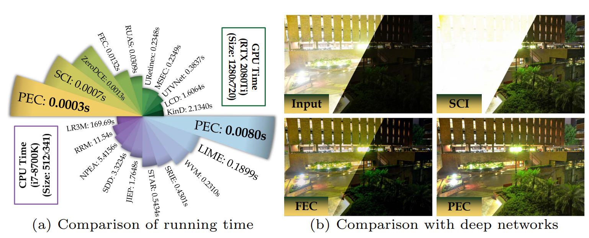
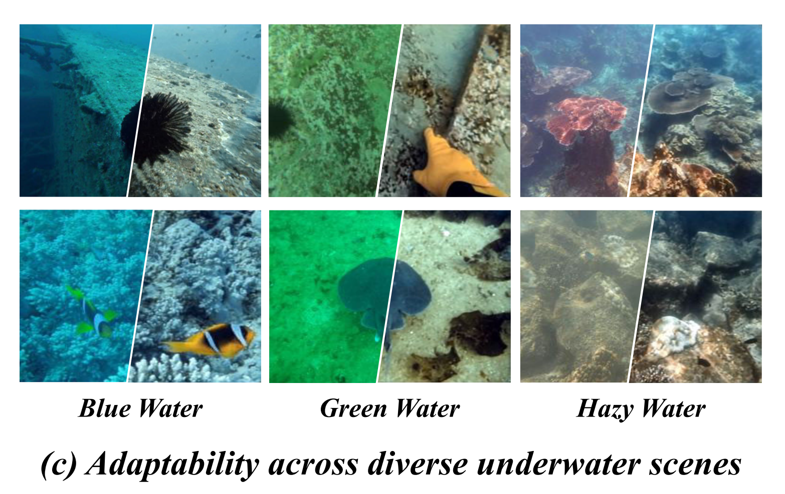
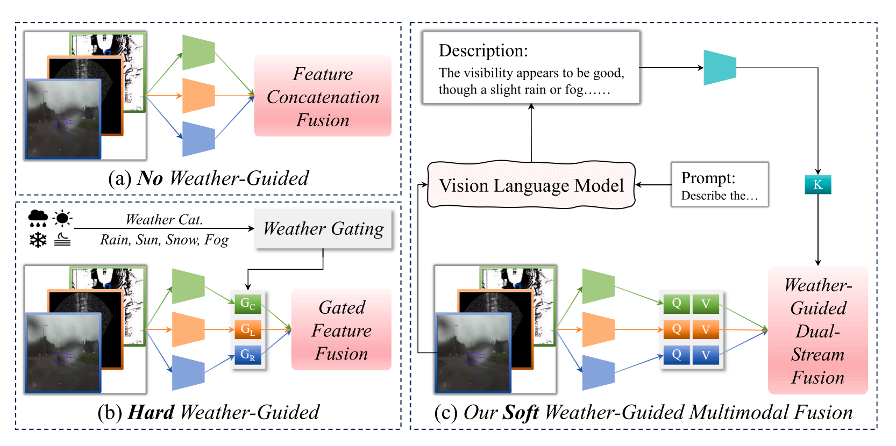
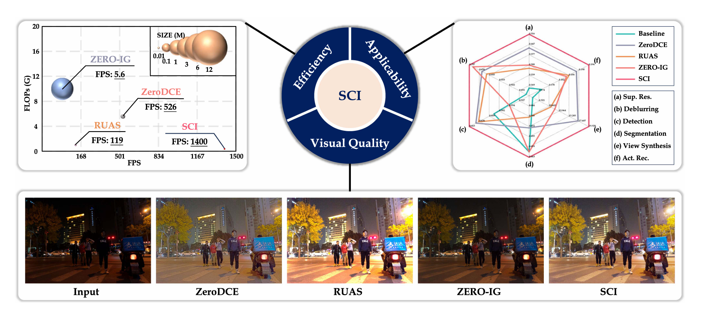
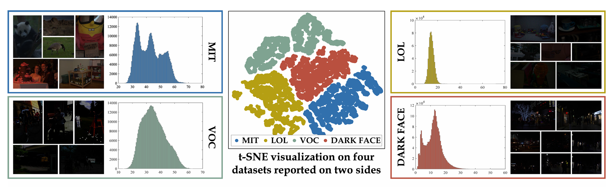
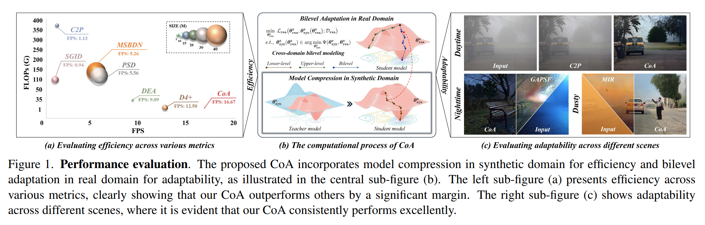
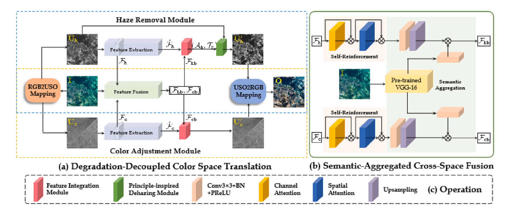
Degradation-Decoupled and Semantic-Aggregated Cross-space Fusion for Underwater Image Enhancement
Xinwei Xue, Jincheng Yuan, Tengyu Ma, Long Ma†, Yi Wang
Information Fusion 2025, 118: 102927 (JCR-Q1, IF: 17.4)
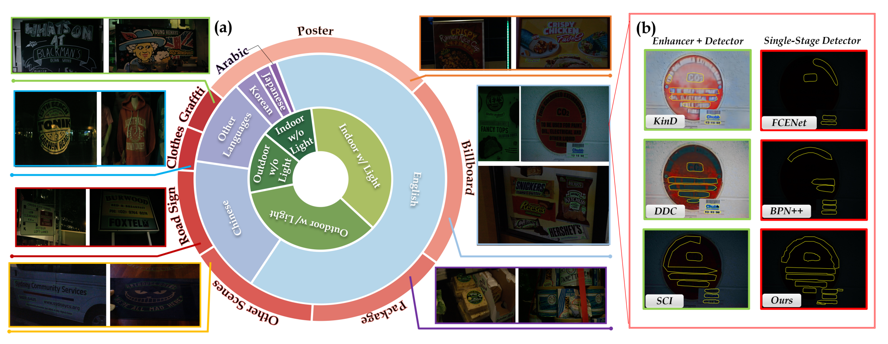
Seeing Text in the Dark: Algorithm and Benchmark
Chengpei Xu, Hao Fu, Long Ma†, Wenjing Jia, Chengqi Zhang, Feng Xia, Xiaoyu Ai, Binghao Li, Wenjie Zhang
ACM Multimedia 2024: 2870-2878
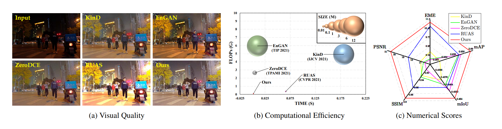
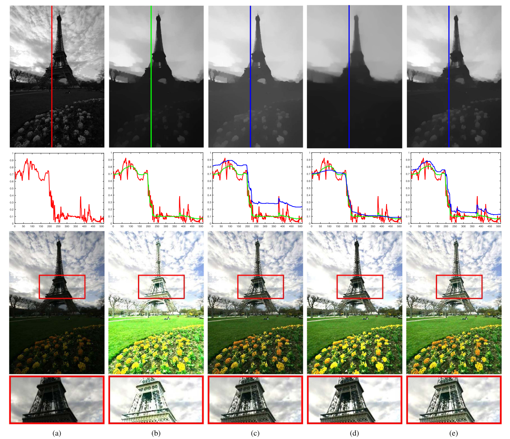
Low-Light Image Enhancement via Self-Reinforced Retinex Projection Model
Long Ma, Risheng Liu, Yiyang Wang, Xin Fan, Zhongxuan Luo
IEEE TMM 2022, 25: 3573-3586 (JCR-Q1, IF: 9.9)
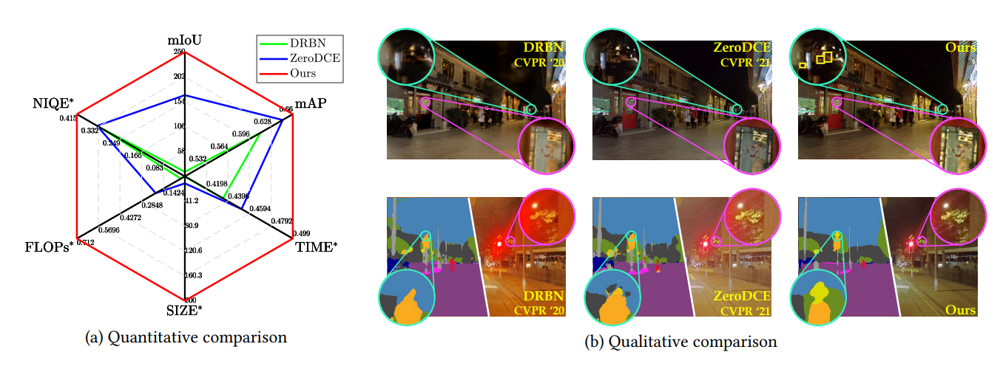
- Image and Vision Computing.
- CVPR, ICCV, ICML, NeurIPS, ICLR, IJCAI, AAAI, ACM Multimedia, ECCV, etc.
- IEEE TPAMI, IJCV, IEEE TIP, IEEE TNNLS, IEEE TMM, IEEE TCSVT, IEEE TGRS, etc.
CVPR Compute Transparency Champion Award (Corresponding Author)
World’s Top 2% Scientists (Stanford University & Elsevier) (1/1)
ICML Outstanding Reviewer (1/1)
China Society of Image and Graphics (CSIG) Doctoral Dissertation Incentive Program Nomination Award (1/1)
ACM Dalian Doctoral Dissertation Award (1/1)
The Excellent Paper Award by The Chinese Journal of Image and Graphics (1/3)
First Prize of Liaoning Natural Science Academic Achievement Award (3/5)
PRCV Best Poster Award (2/3)